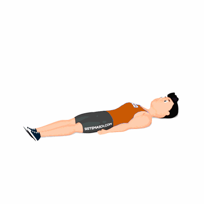

One Leg Stretch

O exercício trabalha os músculos do abdômen, como também a coordenação e concentração.
Ficha Técnica
Tipo: Pilates
Grupo Muscular: Abdome
Aparelho: Nenhum
Músculos: Nenhum
Como realizar
- Comece deitado no chão com as pernas estendidas;
- Descanse seus braços ao longo do corpo com as palmas das mãos voltadas para baixo;
- Levante sua cabeça para frente, levantando seu tronco para não forçar o pescoço, simultaneamente, dobre o joelho direito e puxe-o em direção ao seu peito;
- Segure no joelho direito e mantenha a perna esquerda totalmente estendida com os dedos em ponta de pé;
- Ao expirar troque suas posições de perna e mão.
 RC STORE
RC STORE